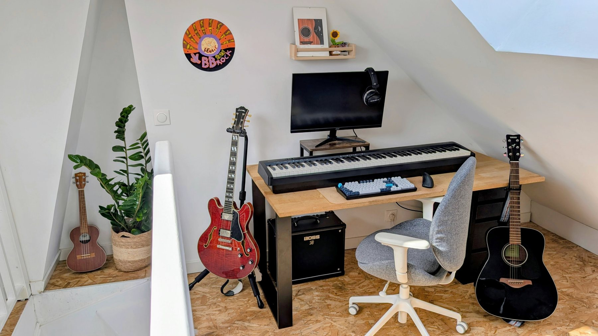
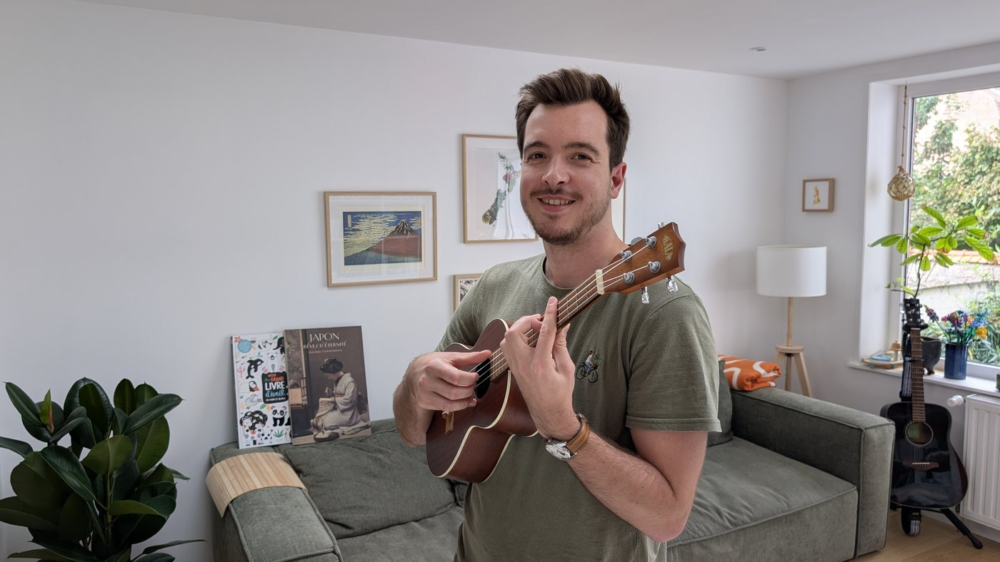
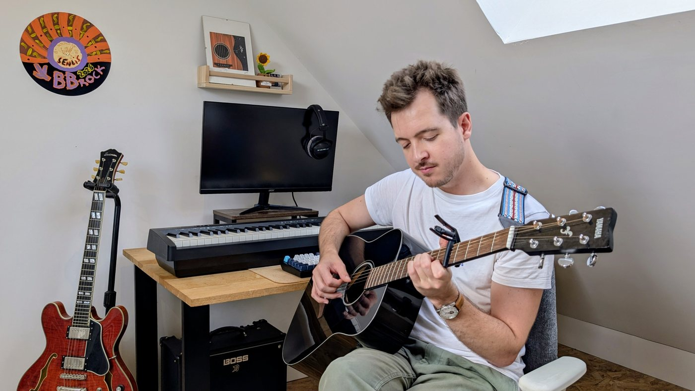

Ingénieur le jour. Le reste du temps, surtout ça.
Une fois l'ordinateur refermé, vous me trouverez le plus souvent une guitare entre les mains ou devant quelque chose qui mijote doucement.
Je suis venu à la musique tard et délibérément, et elle est devenue, sans bruit, ce qui compte le plus pour moi en dehors du travail : la guitare fingerstyle avant tout, un peu de piano pour comprendre ce que j'entends, et plus de chant que je ne l'aurais avoué il y a quelques années.
C'est la moitié chaleureuse du site. Rien de tout cela ne figure dans mon CV.
Quelques choses à savoir
- Personne ne jouait d'un instrument dans ma famille. J'ai pris le ukulélé d'un colocataire à vingt ans passés et je ne l'ai jamais vraiment reposé.
- Une guitare, quatre voix à la fois : basse, rythme, harmonie et mélodie. Voilà pourquoi le fingerstyle a gagné.
- J'ai tendance à transformer mes loisirs en choses que je veux comprendre de l'intérieur.
- Cuisiner est ma façon de montrer mon affection. La fermentation, ma façon de travailler la patience.
- J'ai grandi là où l'on fabrique le comté. Je considère le fromage comme un patrimoine culturel et j'agis en conséquence.
En ce moment
- Je joueDes arrangements fingerstyle, et j'apprends à chanter pendant que la main droite continue.
- J'apprendsLe piano, surtout comme une fenêtre sur l'harmonie. De l'entraînement de l'oreille presque chaque jour, souvent en marchant.
- Je cuisineCe qui est de saison. Il y a sûrement quelque chose en train de fermenter dans un bocal en ce moment même.
- EnsuiteJouer avec d'autres, et terminer une première chanson que je pourrai dire mienne.
- J'écouteSurtout des choses intimes et mélodiques : folk, indie, auteurs-compositeurs, et de temps en temps un détour complet par un autre genre.
- Je chercheCe moment où quelque chose que je n'entendais qu'instinctivement devient soudain quelque chose que je peux reconnaître, comprendre et utiliser.


Retour au côté professionnel, ou vers la recherche.